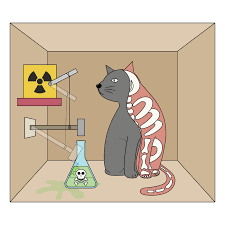

| Nume | Poza | Varsta | Detalii |
|---|---|---|---|
| Choupette Lagerfeld → | 11 ani |
Choupette, pisica persana a designerului Karl Lagerfeld, este unul dintre mostenitorii averii uriase lasate de creatorul de moda care a murit la varsta de 85 de ani. Celibatar si fara copii, Karl Lagerfeld lasa in urma sa o pisica devenita celebra in ultimii ani, Choupette, o birmaneza pe care a adoptat-o in 2011, de la manechinul Baptiste Giabiconi. De altfel, Lagerfeld iubea atat de mult felina incat a spus despre Choupette, in 2013, ca ar lua-o de sotie daca acest lucru ar fi legal. |
|
| Tom(din Tom&Jerry) → | ~10-30 (1940 - desenul) |
Tom și Jerry (engleză Tom and Jerry) este o franciză media și serie de desene animate americană creată de William Hanna și Joseph Barbera în 1940. Cunoscută cel mai bine pentru cele 161 de scurtmetraje teatrale de Metro-Goldwyn-Mayer, seria se concentrează pe rivalitatea dintre personajele titulare a unui motan pe nume Tom și a unui șoarece pe nume Jerry. O mulțime de scurtmetraje prezintă de asemenea multe personaje recurente. |
|
| Pisica (in Egiptul Antic)→ | ?acum 4.000 de ani |
În mitologia egipteană, Bastet a fost zeița lunii și a fecundității, ocrotitoarea femeilor gravide, și zeița felinelor, reprezentată fie într-o formă hieratică, de femeie cu cap de leoaică, fie popular, ca o femeie cu cap de pisică, sau numai ca un cap de pisică |
|
| Pisica lui Schrödinger→ |  | ?creat in 1935 |
Pisica lui Schrödinger este un experiment mental, adesea caracterizat ca un paradox, imaginat de fizicianul austriac Erwin Schrödinger în 1935. Ilustrează ce probleme apar dacă se aplică interpretarea Copenhaga a mecanicii cuantice asupra obiectelor din viața de zi cu zi. |
| Pisica mea→ | 4 ani | Pisica draguta care poate zgaria urmatoarele obiecte:
|